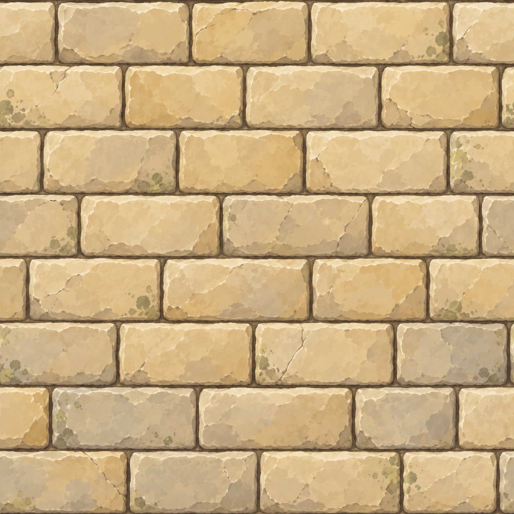
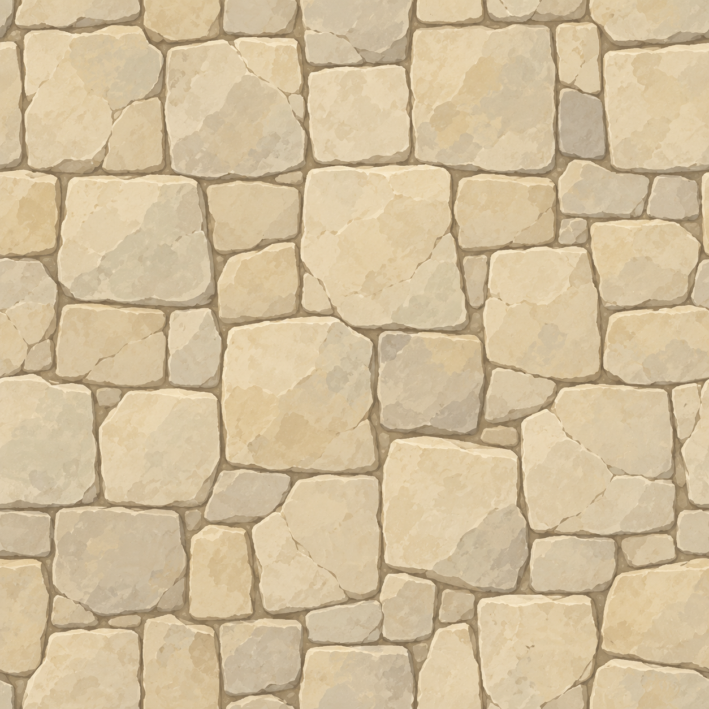

两张纹理，怎样变成一段城墙
独立教学示例 · 固定坐标 · 无 Unity、无安装、无联网依赖
先点“纯色”，观察程序生成的形状，再切到“贴纹理”。垛口的空缺来自几何，石砖细节来自图片。


点击墙上的一个表面：下面会显示它的四个顶点、两组三角形，以及 UV 纹理坐标。
本例如何对应 Unity 项目
这个小程序把长度、高度、厚度直接写在 demo.js 的 SIZE 中，省去了墙网、敌台、导航和复杂遮挡切片。为方便看清立体结构，本例使用固定斜俯视投影，与游戏当前投影参数不同；所有面最后仍投到二维画布。
buildFaces() 生成表面，相当于项目里的 BuildSection / AddRail / Prism；drawTexturedTriangle() 展示“顶点＋UV→贴图”的过程。在 Unity 中，这一步由 Mesh 的顶点、UV、三角形索引和 Shader/GPU 完成。
UV 是图片的坐标：(0,0) 到 (1,1) 对应一张完整图片。本例使用普通重复采样；例如 U 从 0 到 3 就横向重复三次。游戏还包含重复边界裁切和镜像采样，本例省略这些处理。
女墙位于平台两侧，路面净宽＝总宽 − 2 × 女墙厚度。间隔里不生成高垛口，但下方的矮女墙始终连续。拖动“纹理尺寸”只改变 UV，不改变任何顶点或垛口数量。